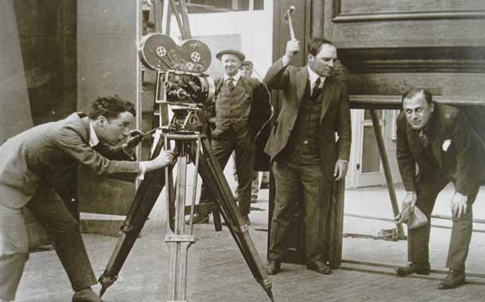

QUE ES LA CINEMATOGRAFIA

Entender la cinematografía va mucho más allá de su definición. Si bien el diccionario lo define como el "arte de hacer películas", es más que solo eso. La cinematografía es el arte de la fotografía y la narración visual en una película o programa de televisión.
Comprende todos los elementos visuales en pantalla, incluida la iluminación, el encuadre, la composición, el movimiento de la cámara, los ángulos, la selección de películas, las opciones de lentes, la profundidad de campo, el zoom, el enfoque, el color, la exposición y la filtración.
¿Cómo ha evolucionado la cinematografía a lo largo de los años?
 En los primeros días del cine, el director de la película solía ser también el director de fotografía o el operador de cámara, como se llamaba típicamente al puesto en ese momento. Esto se debe a que el medio estaba comenzando a encontrar su propio camino y, por lo general, una unidad de realización de películas podría haber estado compuesta solo de una o dos personas, lo que les exigió que cumplieran varios roles.
En los primeros días del cine, el director de la película solía ser también el director de fotografía o el operador de cámara, como se llamaba típicamente al puesto en ese momento. Esto se debe a que el medio estaba comenzando a encontrar su propio camino y, por lo general, una unidad de realización de películas podría haber estado compuesta solo de una o dos personas, lo que les exigió que cumplieran varios roles.
Pero a medida que la producción cinematográfica comenzó a florecer y se volvió más sofisticada, la necesidad de separar responsabilidades se hizo más evidente. Y así fue cómo se creó el papel de Director de fotografía.
A medida que la visibilidad de esta posición creció, más de una docena de los primeros directores de fotografía de cine, entre ellos Robert Newhard y Victor Milner, decidieron organizar y formar la Sociedad Estadounidense de Cinematógrafos en 1919.
Desde entonces, la importancia de la cinematografía en el cine no ha hecho más que seguir creciendo. Su importancia es evidente no solo a través del reconocimiento en ceremonias como los Premios de la Academia, sino también por el crecimiento de los programas y cursos especializados de cinematografía enfocados únicamente a este oficio.
¿Por qué es importante la cinematografía para la realización de películas?
 La cinematografía establece y respalda el aspecto general y el estado de ánimo de la narrativa visual de una película. Cada elemento visual que aparece en la pantalla, también conocido como la puesta en escena de una película, puede servir y mejorar la historia, por lo que es responsabilidad del director de fotografía asegurarse de que todos los elementos sean cohesivos y respalden la historia.
Es por ello que los cineastas a menudo optan por gastar la mayor parte de su presupuesto en cinematografía de alta calidad para garantizar que la película se vea increíble en la pantalla grande.
En pocas palabras, sin la cinematografía, no hay película. Un guionista puede crear la historia y un director puede guiar cómo actúan los actores, pero es el director de fotografía quien captura permanentemente esa historia y los actores en ella.
La cinematografía establece y respalda el aspecto general y el estado de ánimo de la narrativa visual de una película. Cada elemento visual que aparece en la pantalla, también conocido como la puesta en escena de una película, puede servir y mejorar la historia, por lo que es responsabilidad del director de fotografía asegurarse de que todos los elementos sean cohesivos y respalden la historia.
Es por ello que los cineastas a menudo optan por gastar la mayor parte de su presupuesto en cinematografía de alta calidad para garantizar que la película se vea increíble en la pantalla grande.
En pocas palabras, sin la cinematografía, no hay película. Un guionista puede crear la historia y un director puede guiar cómo actúan los actores, pero es el director de fotografía quien captura permanentemente esa historia y los actores en ella.